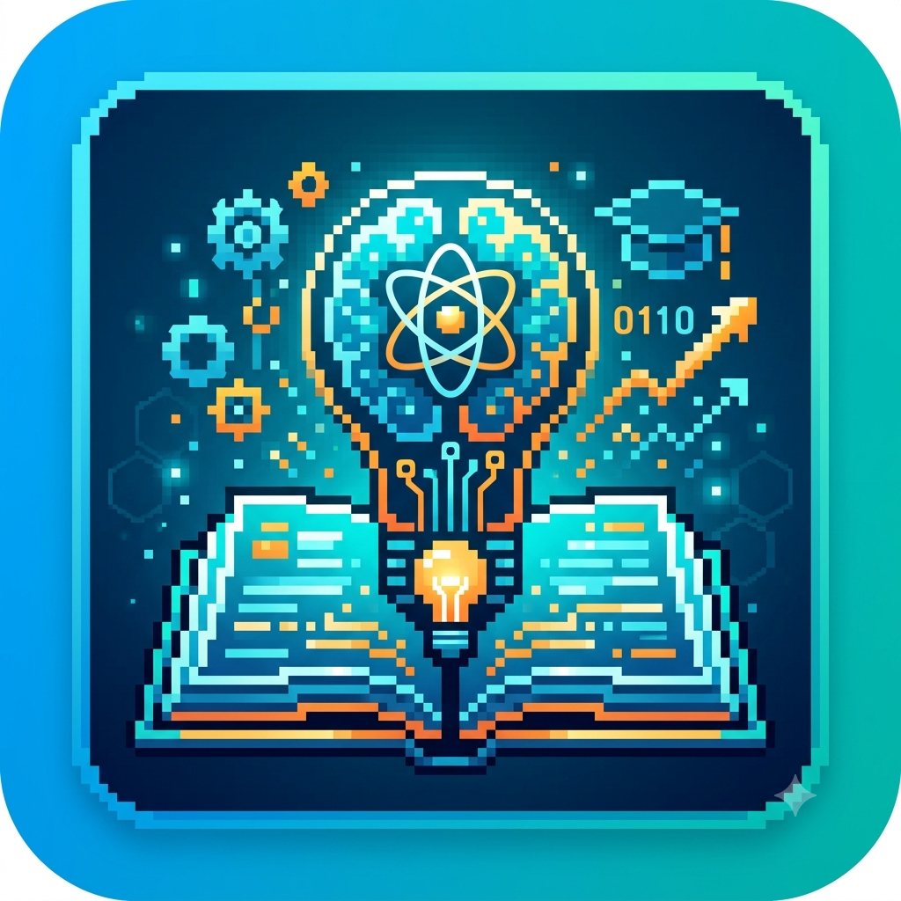
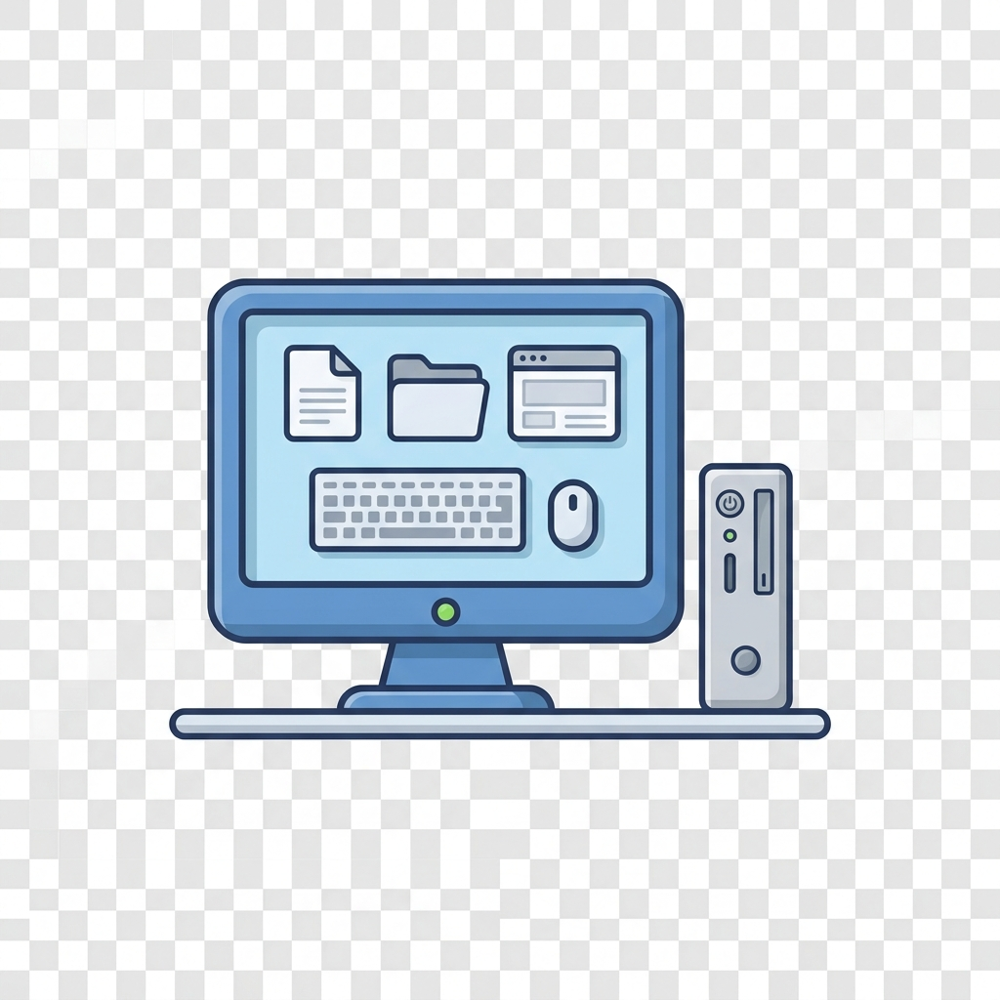

Meu primeiro post
Por: Calvo Guilherme
Boas-vindas ao meu novo blog! Aqui vou compartilhar dicas de programação e curiosidades da área de tecnologia
Eu mesmo :D
Vou compartilhar conhecimentos sobre tecnologia e programação

Por: Calvo Guilherme
Boas-vindas ao meu novo blog! Aqui vou compartilhar dicas de programação e curiosidades da área de tecnologia
Eu mesmo :D
Por: Calvo Guilherme
O e-mail revolucionou a forma como interagimos. Quando hoje praticamente uma em cada três pessoas deve ter um e-mail, chega a ser estranho pensar que há 15 anos atrás poucas pessoas tinham e-mail e as poucas que o tinham não estavam habituadas a ir ver a caixa de email todos os dias. A Internet evoluiu tão rápido, que o email se tornou bastante comum, influenciando até o modelo de negócio. Todos utilizamos esta ferramenta de comunicação, no dia a dia, mas nunca pensámos na sua história. A história do e-mail, apesar de ser recente, já passou por diversas evoluções desde a sua criação. E, ao longo do tempo, acompanhou a evolução tecnológica e a evolução da internet como todo. Com isso, desde a sua criação até hoje, ganhou mais espaço e outras funcionalidades, deixando de ser restrito para se tornar universal.

Por: Calvo Guilherme
Computador é uma máquina que pode ser programada para realizar automaticamente sequências de operações aritméticas ou lógicas (computação). Os computadores eletrônicos digitais modernos podem executar conjuntos genéricos de operações conhecidos como programas, que permitem que os computadores executem uma ampla gama de tarefas. Os termos sistema de computador ou sistema computacional podem se referir a um computador nominalmente completo que inclui hardware, sistema operacional, software e equipamento periférico necessário e usado para operação completa; ou a um grupo de computadores vinculados e que funcionam juntos, como uma rede de computadores ou cluster de computadores.
Fonte: Wikipédia

Por: Calvo Guilherme
As placas de vídeo são peças fundamentais no universo da computação, responsáveis por transformar dados em imagens que visualizamos em nossas telas. Desde as primeiras placas até as mais sofisticadas de hoje em dia, cada vez mais elas têm impulsionado a indústria de design, games e muito mais e até mesmo outras aplicações visuais inclusive no meio militar.
Fonte: Grupoepj